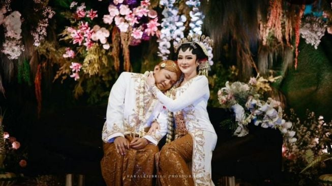
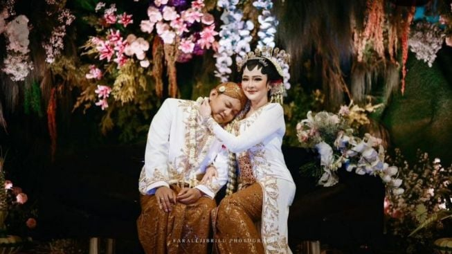

Fadli & Ulum
Untuk: Tamu Undangan
.jpeg.jpg)
Kami mengundang anda untuk menghadiri acara pernikahan dari
Fadli & Ulum
PUKUL 10.00 WIB - Selesai
Kediaman Mempelai Wanita
Selasa, 19 Agustus 2025
Assalamu'alaikum
Alhamdulillahi Rabbil ‘Alamin, dengan rahmat dan ridho Allah Subhanahu wa Ta’ala, kami telah melangsungkan akad nikah putra dan putri kami
Achmad Fadli Faturrochim
Putra dari Bapak Ali Muchtar & Ibu Misrani
(Banyuwangi, Jawa Timur)&
Ludfi Hidayatul Ulum
Putri dari Bapak Lutfianto & Ibu Yanti
(Blitar, Jawa Timur)
وَمِنْ اٰيٰتِهٖٓ اَنْ خَلَقَ لَكُمْ مِّنْ اَنْفُسِكُمْ اَزْوَاجًا لِّتَسْكُنُوْٓا اِلَيْهَا وَجَعَلَ بَيْنَكُمْ مَّوَدَّةً وَّرَحْمَةً ۗاِنَّ فِيْ ذٰلِكَ لَاٰيٰتٍ لِّقَوْمٍ يَّتَفَكَّرُوْنَ
"Di antara tanda-tanda (kebesaran)-Nya ialah bahwa Dia menciptakan pasangan-pasangan untukmu dari (jenis) dirimu sendiri agar kamu merasa tenteram kepadanya. Dia menjadikan di antaramu rasa cinta dan kasih sayang. Sesungguhnya pada yang demikian itu benar-benar terdapat tanda-tanda (kebesaran Allah) bagi kaum yang berpikir"
– QS. Ar-Rum 21 –
Untuk itu, dengan segala hormat dan kerendahan hati, kami mengundang Bapak/Ibu/Saudara/i untuk hadir dalam acara tasyakuran pernikahan yang akan kami selenggarakan pada:
Selasa, 19 Agustus 2025
Kediaman Mempelai Wanita
Lihat MapGaleri


 

Love Story
Di tengah hiruk-pikuk kegiatan santri di media sosial, sebuah flyer AISNU mencuri perhatian Syifa’. Ia melihat foto santri putri bernama Rania Nurul Rizqia yang meneduhkan hatinya.
Cinta sejati takkan hilang begitu saja. Dalam sebuah ajang Pemilihan Duta Santri Nasional di Yogyakarta, keduanya dipertemukan. Rania, dengan kecantikannya dan kecerdasannya, memikat hati Syifa’. Setiap kalimat dan senyuman Rania, menjadi kenangan tak terlupakan.
Seperti yang sering terjadi dalam cerita cinta, takdir memisahkan mereka untuk sementara. Rania melanjutkan studi S2-nya di negeri yang jauh, Edinburgh-Skotlandia, sementara Syifa’ menempuh magister di Jakarta.
Tahun ini menjadi titik balik dalam kisah cinta mereka. Rania kembali ke tanah air, dan keduanya bertemu di ajang Pemilihan Duta Santri Nasional di Surabaya. Selama agenda berlangsung, Rania tertarik pada kebaikan, kebijaksanaan, dan ketulusan Syifa’ sebagai Ketua Umum Duta Santri Nasional. Syifa’ akhirnya mengungkapkan perasaan yang selama ini dia simpan kepada Rania.
Setelah berkenalan lebih jauh serta menyamakan visi dan misi hidup, Syifa’ memutuskan untuk silaturahmi dan meminta restu kepada orang tua Rania. Rania pun melakukan hal yang sama. Dengan izin Allah dan dukungan orang tua, Syifa’ dan Rania memutuskan untuk melanjutkan ibadah cinta ini dalam ikatan pernikahan mereka yang mulia.
RSVP & Ucapan
Gift
Terima Kasih
Merupakan suatu kebahagiaan dan kehormatan bagi kami, apabila Bapak/Ibu/Saudara/i, berkenan hadir dan memberikan do’a restu kepada kami.